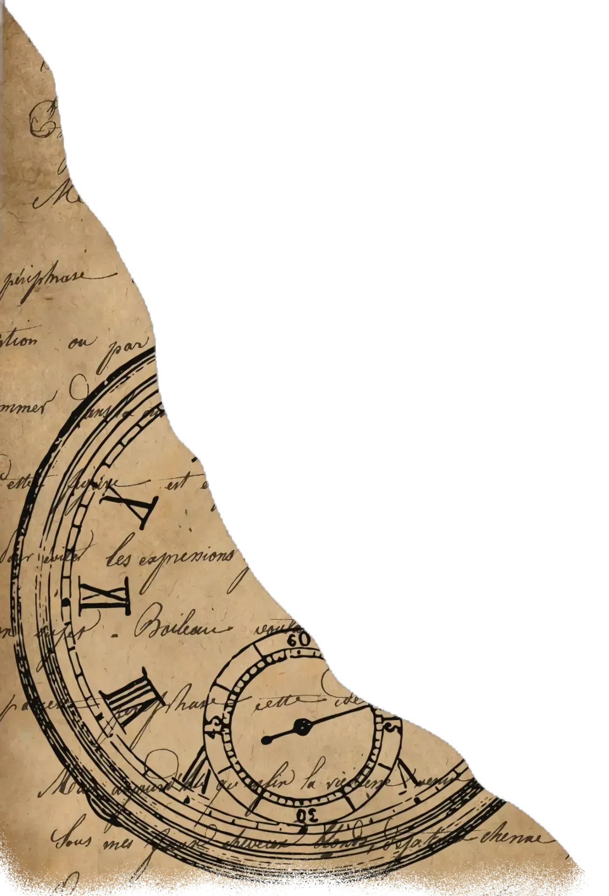
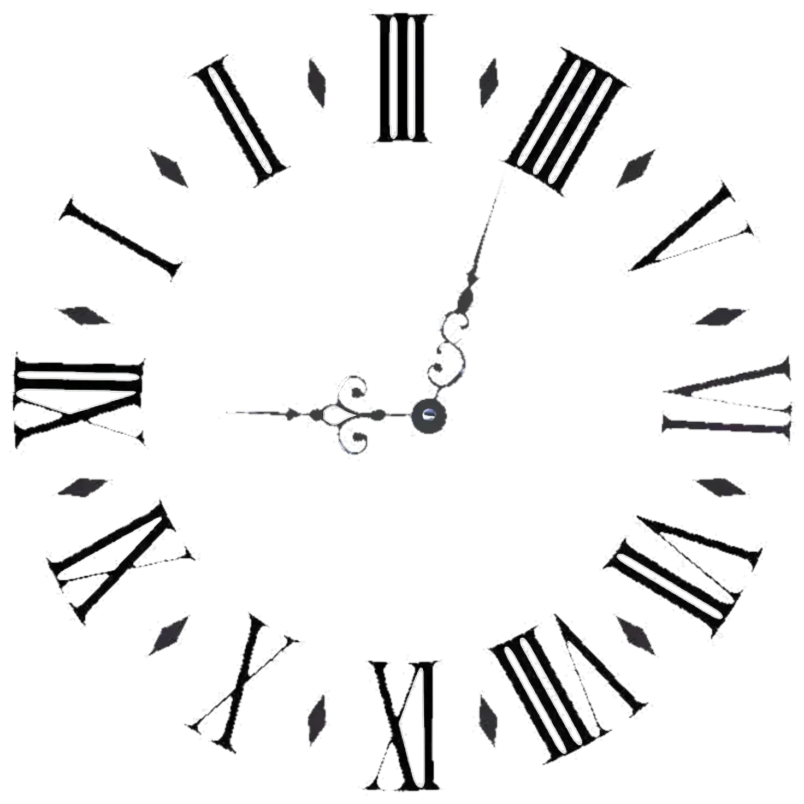
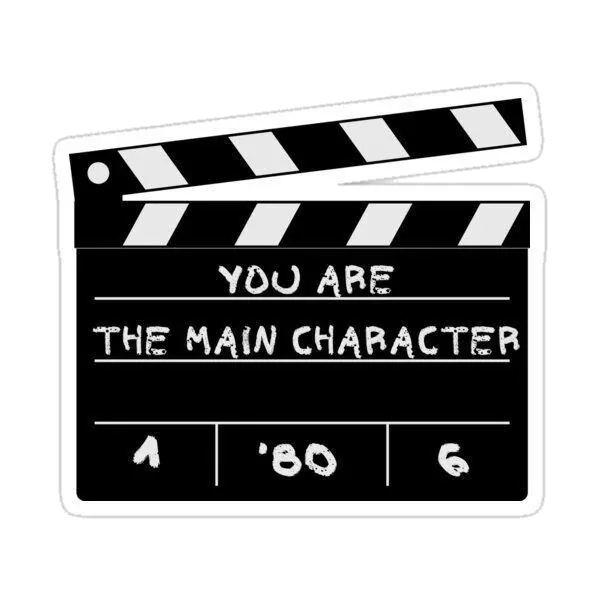
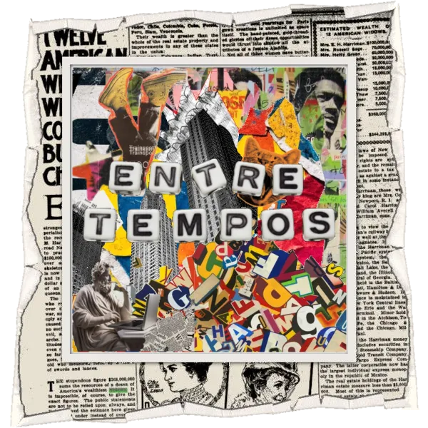
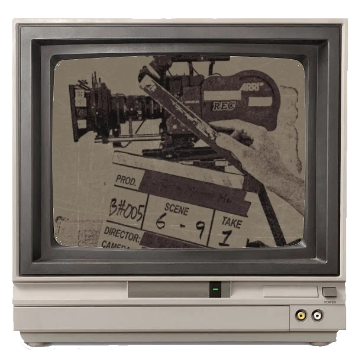
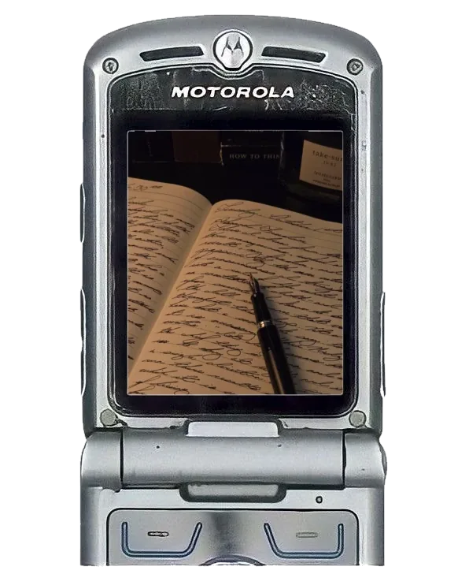
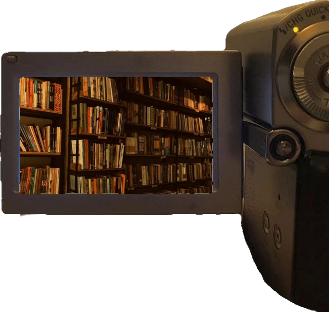
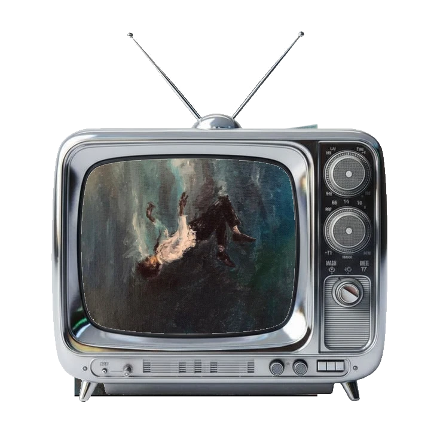
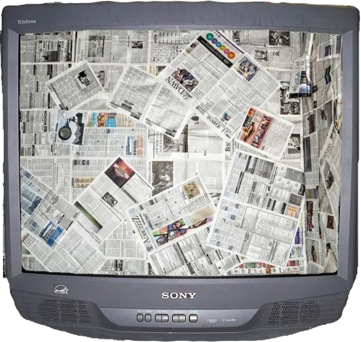
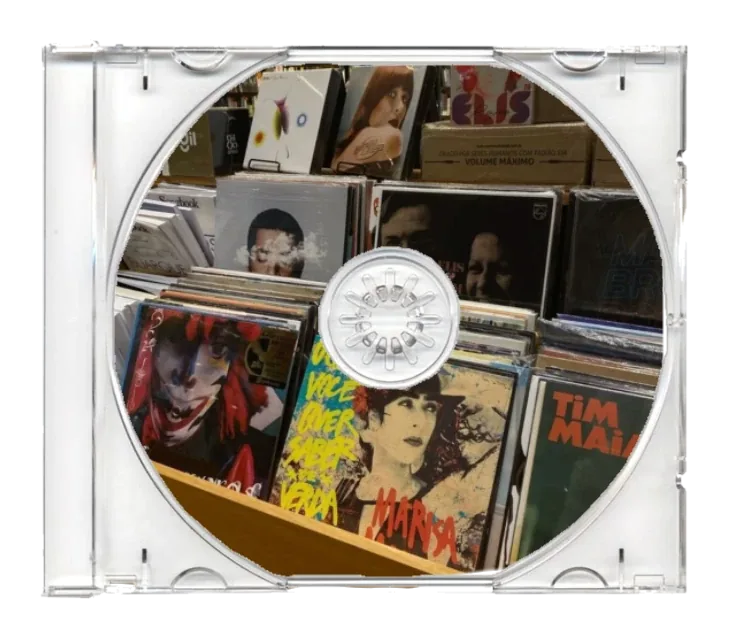

"Nem foi tempo perdido somos tão jovens"


Conheça o projeto

A Entre Tempos é uma revista eletrônica escolar desenvolvida por estudantes do Ensino Médio da Escola de Referência Professor Antônio Farias, em Gravatá, Pernambuco.
Também identificada como Revista Entre Tempos, a publicação é sem fins lucrativos e reúne poemas, desenhos, música, filmes, livros, curiosidades e podcast produzidos ou selecionados no ambiente escolar.
O projeto busca informar, provocar debates, incentivar reflexões e abrir espaço para a produção artística e cultural dos estudantes através da poesia, da arte e da palavra.
"Entre tempos, a palavra permanece."



Um Top 5 mensal construído a partir das recomendações dos nossos alunos. Confira filmes marcantes e inspiradores escolhidos a dedo por quem faz a revista.

A poesia que toca a alma. Aprecie os versos imortais de grandes Poetas Conhecidos e leia os emocionantes Poemas Autorais criados e publicados pelos nossos alunos.

O nosso Top 5 mensal literário. Resenhas e recomendações especiais dos nossos alunos sobre livros clássicos e contemporâneos que transformam e inspiram.

Uma galeria de arte visual. Explore as grandes obras de Artistas Conhecidos e prestigie os criativos Desenhos Autorais publicados com talento pelos nossos estudantes.

Fatos surpreendentes do mundo em Curiosidades Gerais e publicações Autorais, onde os próprios alunos compartilham suas vivências e interesses pessoais.

Os sons do nosso dia a dia. Descubra as Top Músicas recomendadas pela turma, e acompanhe nossos alunos brilhando em publicações originais de Talento Musical.
Conheça as pessoas por trás de cada página, projeto e ideia.
Por de trás das câmeras Vamos lá
Vamos lá